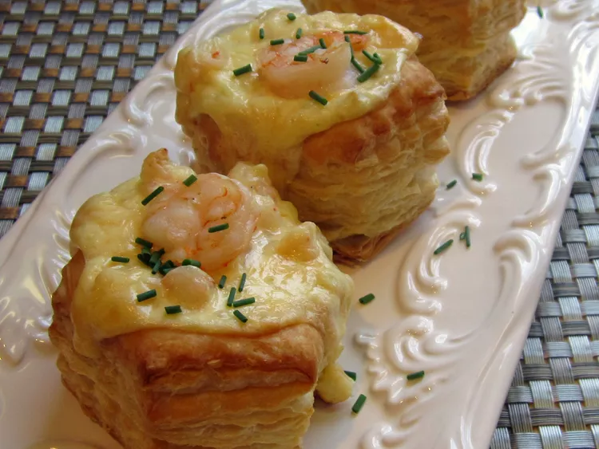

Shrimp Scampi Cheesecake Appetizer Recipe

Description
Rich cheesecake with a seafood surprise. Decadent and smooth for adult tastes.
Ingredients
- 1 tablespoon olive oil
- 1 onion
- 6 teaspoons minced garlic
- 1 pound fresh shrimp, peeled and deveined
- 12 shells puff pastry, baked
- 4 tablespoons butter or margarine
- 3 (8 ounce) packages cream cheese, softened
- 4 eggs
- ½ cup heavy cream
- 16 ounces smoked Gouda, grated
- 2 teaspoons salt
Directions
- Preheat oven to 350 degrees F (175 degrees C).
- In a large skillet over medium-low heat, warm oil and saute onions and garlic until onions are translucent; set aside to cool. When cool, pour off liquid reserving garlic.
- Cut shrimp into 1/2 inch pieces, reserving 12 uncut for garnish. In a large skillet over medium-low heat, melt butter and add reserved garlic and all shrimp; cook shrimp for 2 to 4 minutes or until done.
- Remove center circle and a small portion of inside of cooled puff pastry shells.
- In a medium bowl, beat cream cheese until creamy; add one egg at a time and beat until well mixed. Add cream, Gouda, onions, shrimp and salt.
- Spoon filling into puff pastry shells.
- Bake in preheated oven for 20 to 25 minutes or until filling is browned on top. Garnish with whole shrimp and chopped chives; serve.
Home